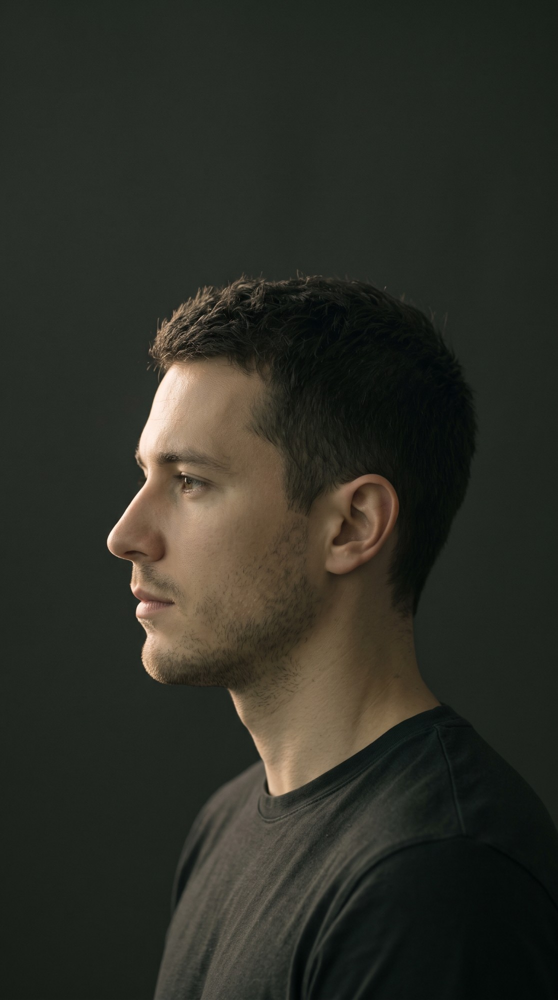
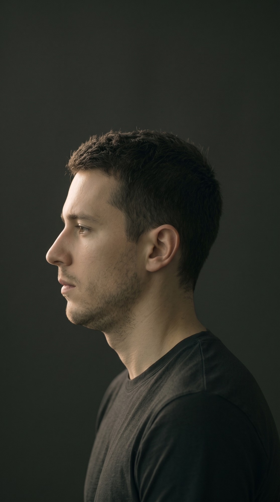
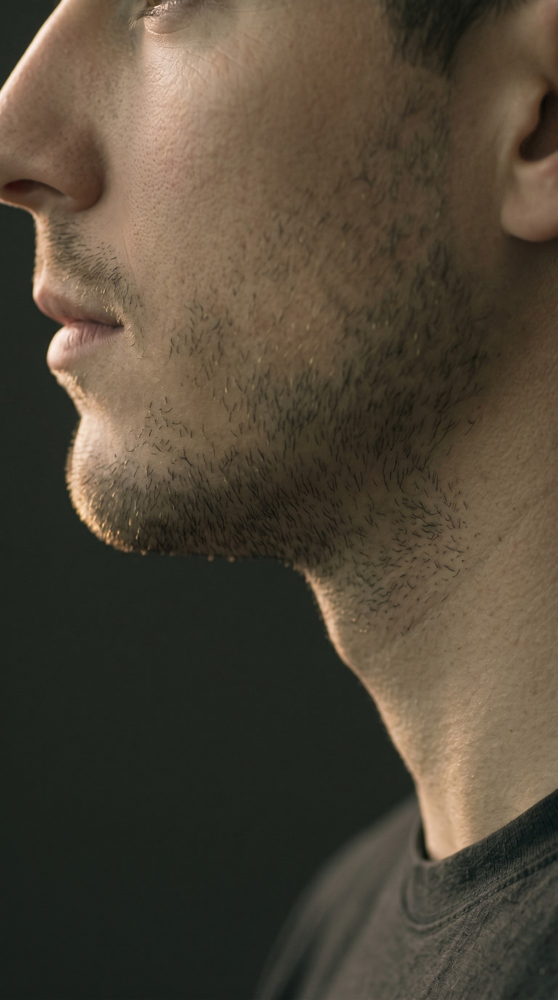

01 HEAD POSITION
02 MANDIBULAR STRUCTURE
03 MASTICATION
FORWARD HEAD
NEUTRAL
POSTURE
FUNCTION
GENETICS

Yourjawlineismorethangenetics.
Headpositionchangesyourprofile.
Same anatomy · different position
Oneprofile.Threesystems.
Linked ≠ caused
Masticationisamechanicalstimulus.
DURING GROWTH
Population trend · not a guarantee
Butharderdoesn'tmeanbetter.
ADULT MUSCLE
Adapts
Use can change muscle — size, tone, endurance.
ADULT BONE
Not redrawn
Hard food won't reshape a grown jaw.
Understandthestructure.Don'tchasemyths.
FC
The Face Card
Protocol
by Val Saint